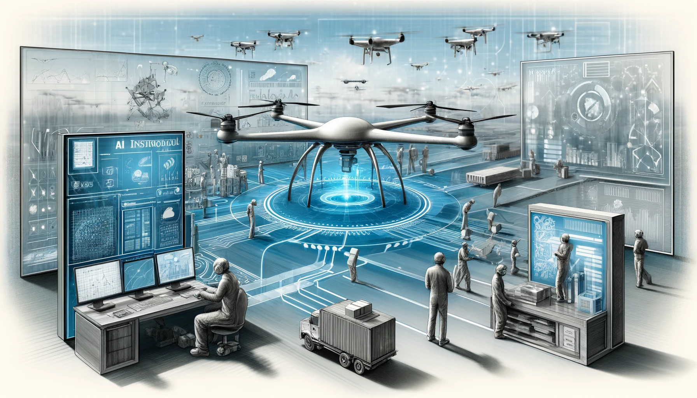

-
Mantenimiento Predictivo
El mantenimiento predictivo basado en Inteligencia Artificial (IA) ha transformado la manera en que las empresas gestionan sus equipos y maquinaria industrial. Tradicionalmente, el mantenimiento se realizaba de manera preventiva o reactiva, es decir, programado en intervalos fijos o solo cuando una falla ocurría. Sin embargo, con la IA, las empresas pueden monitorear continuamente el estado de sus activos mediante sensores IoT y algoritmos de Machine Learning, los cuales procesan datos como temperatura, presión y vibraciones para predecir posibles fallos. Esto permite programar mantenimientos únicamente cuando es necesario, optimizando costos y reduciendo el tiempo de inactividad de los equipos (Brock et al., 2020).
Un caso destacado es el de General Electric Aviation, que ha implementado sistemas de IA en sus motores de avión para predecir fallas y reducir la probabilidad de incidentes. Estos modelos han permitido disminuir el número de inspecciones innecesarias y optimizar la planificación del mantenimiento, ahorrando millones de dólares a aerolíneas de todo el mundo. Asimismo, en el sector de manufactura, Siemens ha logrado mejorar la eficiencia en fábricas mediante la predicción de fallos en maquinaria, evitando pérdidas por paradas inesperadas y mejorando la seguridad operativa (Willcocks, 2021).
-
Automatización de Procesos (RPA - Robotic Process Automation)
Las empresas han comenzado a adoptar Robotic Process Automation (RPA), una tecnología basada en IA que permite la automatización de tareas repetitivas y rutinarias. Estas incluyen la gestión de facturación, entrada de datos, validación de documentos y atención al cliente mediante chatbots inteligentes. La automatización de procesos permite a las empresas reducir errores humanos, mejorar la eficiencia operativa y liberar a los empleados de tareas monótonas para que se concentren en actividades más estratégicas (Willcocks, 2021).
Un ejemplo de esta aplicación es Siemens, que ha implementado sistemas de IA para gestionar facturación en el área financiera, logrando una reducción del 30% en costos administrativos. Del mismo modo, en el sector bancario, JP Morgan ha desarrollado un sistema llamado COIN que permite analizar y extraer información de contratos legales en cuestión de segundos, una tarea que anteriormente requería cientos de horas de trabajo humano (Brynjolfsson & McAfee, 2014). Esta transformación está permitiendo que las organizaciones aceleren sus procesos internos y ofrezcan mejores servicios a sus clientes.
-
Control de Calidad en Producción
La IA ha revolucionado la inspección y el control de calidad en la industria manufacturera mediante el uso de Visión Artificial y Redes Neuronales Convolucionales (CNNs). Estos sistemas son capaces de analizar imágenes y videos en tiempo real para detectar defectos en productos con una precisión superior a la de un operador humano. Las empresas pueden identificar fallos en la producción de manera automática, lo que reduce el desperdicio de materiales y garantiza estándares de calidad más altos (Goodfellow et al., 2016).
Un caso emblemático es el de BMW, que utiliza IA en sus fábricas para revisar la calidad de soldaduras y pintura en vehículos. Mediante el uso de cámaras de alta resolución y algoritmos de Machine Learning, BMW ha logrado una precisión del 99% en la detección de imperfecciones, lo que ha reducido considerablemente los costos asociados a devoluciones y reclamaciones. Esta tecnología también ha sido adoptada en la industria electrónica, donde empresas como Foxconn utilizan IA para inspeccionar microchips y garantizar su correcto funcionamiento antes de ser ensamblados en dispositivos electrónicos (Marr, 2020).
-
Optimización de la Cadena de Suministro
La cadena de suministro ha sido optimizada de manera significativa con la IA gracias a su capacidad para predecir la demanda, optimizar rutas logísticas y gestionar inventarios de forma eficiente. Mediante el uso de aprendizaje supervisado, las empresas pueden analizar grandes volúmenes de datos y prever picos de demanda, evitando sobrecostos por almacenamiento innecesario y garantizando la disponibilidad de productos en los momentos clave (Brynjolfsson & McAfee, 2014).
Un ejemplo es el de Amazon, que ha desarrollado sistemas de IA avanzados para predecir qué productos serán más solicitados en distintas ubicaciones y distribuir el inventario de manera óptima. Gracias a estos modelos, Amazon ha logrado reducir en un 40% los tiempos de entrega y mejorar la satisfacción del cliente. Empresas de transporte como DHL también han incorporado IA para mejorar la planificación de rutas y minimizar retrasos en la entrega de mercancías (Russell & Norvig, 2021).
Beneficios de la IA en la Cadena de Suministro
Beneficios de la IA en la Cadena de Suministro Beneficio Descripción Predicción de demanda Modelos de IA analizan patrones de compra y tendencias del mercado. Permite ajustar la producción y distribución de forma eficiente. Optimización de inventario Evita la sobreproducción y el desabastecimiento mediante el análisis en tiempo real de la demanda. Mejora en la logística y transporte Algoritmos de IA optimizan rutas de entrega, reduciendo costos y tiempos de envío. Automatización de almacenes Uso de robots inteligentes para gestionar productos de manera autónoma. Implementación de visión artificial para mejorar la gestión del stock. Reducción de desperdicios IA ayuda a minimizar pérdidas en productos perecederos optimizando la rotación del stock. -
Mantenimiento Autónomo con Drones e IA
El mantenimiento industrial ha evolucionado con la integración de drones equipados con inteligencia artificial, permitiendo inspecciones autónomas y detalladas de infraestructuras críticas. Mediante algoritmos de visión artificial y aprendizaje automático, estos dispositivos pueden identificar fisuras, corrosión, fugas y otros defectos estructurales en tiempo real. Gracias a esta tecnología, industrias como la energética, manufacturera y de transporte han reducido costos de inspección y mejorado la seguridad, evitando la exposición humana a entornos de alto riesgo (Yang et al., 2021).
Empresas como Shell y Enel han implementado drones con IA para supervisar plataformas petroleras y redes eléctricas, respectivamente. Los modelos avanzados de Deep Learning permiten que los drones no solo detecten fallas, sino que también predigan deterioros futuros con base en el historial de mantenimiento y condiciones ambientales (Li et al., 2020). Esto ha optimizado la planificación del mantenimiento, reduciendo paradas inesperadas y aumentando la eficiencia operativa.
-
Diseño y Optimización de Productos con IA Generativa
La inteligencia artificial generativa ha revolucionado el diseño industrial y la optimización de productos, permitiendo la creación de estructuras más eficientes mediante algoritmos avanzados. A través del diseño generativo, la IA analiza millones de combinaciones posibles para optimizar componentes según resistencia, peso y consumo de materiales. Esto ha sido particularmente útil en industrias como la aeroespacial, automotriz y manufacturera, donde cada gramo reducido puede significar un ahorro significativo en costos y eficiencia (Gao et al., 2019).
Empresas como Airbus y General Motors han implementado esta tecnología para rediseñar piezas con materiales más ligeros y resistentes. Airbus, por ejemplo, ha logrado una reducción del 15% en el peso de sus componentes aeronáuticos, mejorando la aerodinámica y reduciendo el consumo de combustible (Benaiges et al., 2022). Asimismo, en la industria automotriz, Ford ha desarrollado chasis optimizados con IA generativa, logrando estructuras más seguras y eficientes. Esta capacidad de la IA no solo mejora el rendimiento de los productos, sino que también contribuye a la sostenibilidad al reducir el uso de materiales y minimizar residuos de fabricación.
Referencias
- Benaiges, C., Fernández, J., & Ramos, L. (2022). AI-driven generative design for aerospace engineering. Journal of Advanced Engineering
- Brock, J., Smith, T., & Wilson, K. (2020). Predictive maintenance and AI: Optimizing industrial efficiency. Industrial AI Journal
- Brynjolfsson, E., & McAfee, A. (2014). The second machine age: Work, progress, and prosperity in a time of brilliant technologies. W.W. Norton & Company.
- Gao, W., Zhang, Y., & Wang, H. (2019). Machine Learning for Generative Product Design. Engineering Applications of AI, 85(5)
- Goodfellow, I., Bengio, Y., & Courville, A. (2016). Deep learning. MIT Press.
- Li, M., Zhou, X., & Kim, H. (2020). Autonomous UAV-based inspection for industrial maintenance. IEEE Transactions on Robotics, 36(9)
- Marr, B. (2020). Artificial intelligence in practice: How 50 successful companies used AI and machine learning to solve problems. Wiley.